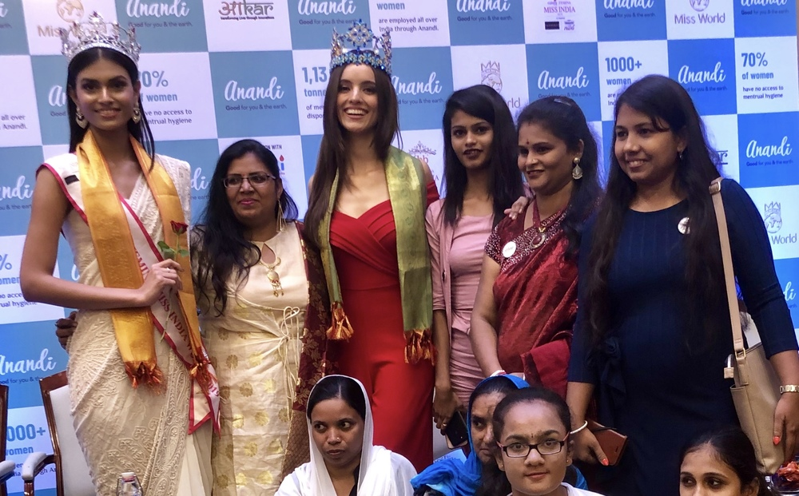

Miss World spreads message about importance of feminine hygiene
Reigning Miss World Vanessa Ponce de León talks about menstrual hygiene in Mumbai

On a recent visit to Mumbai, reigning Miss World 2018 Vanessa Ponce de León attended a conference to address media and attendees on the importance of increasing awareness about menstrual hygiene. She was joined by Suman Rao from Rajasthan, who was crowned Miss World India 2019.
The ‘Beauty With A Purpose’ campaign started by 2017 Miss World Manushi Chhillar has a target reach 300 million women across India who don’t have access to pads.
Vanessa said: “We need to help women understand the importance of menstrual hygiene and it's our social responsibility to reach out and help each other. In addition, there is a need to dispose of used sanitary napkins that use chemicals which pollute our environment. So, it's time women used compostable products.”
To date, the campaign has changed social policy to bring about a shift in cultural attitudes across India, most recently the New Delhi Municipal Corporation has adopted the pads to provide a free supply to all government schools in Delhi.
Instead of plastics or harmful chemicals, the pads use eco-friendly jute and banana fibre. The product doesn't have any super absorbent chemicals and is completely organic.
In her first public experience, Miss World India 2019 Suman Rao added: “I am so happy that I am starting my first interaction with such an important cause. Menstrual hygiene is still a taboo, especially in India. We need to understand that it comes naturally to every woman and they don't need to be ashamed of it or hide it, speak about it like any other ordinary thing.”
‘Beauty With A Purpose’ has supported the campaign to bring greater awareness about the huge difficulties faced by young women as a result of not having access to feminine hygiene.
Taking the 'Feminine Hygiene Awareness' campaign on a ‘Beauty With A Purpose’ global tour, there are now projects for compostable pads in Nelson Mandela’s home town in South Africa, Nepal, Kenya and Tanzania.
In much of Indian culture, men and women are conditioned to think of menstruation as dirty, something to be dealt with in private, and inappropriate if brought up in conversation. Women and girls are shunned from places of worship, as well as encouraged to skip school and refrain from sports while on their period. A shocking 23% of girls end up dropping out of school when they hit puberty due to the lack of support and public shame.